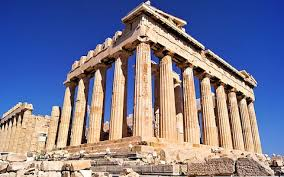

B'mouth Doc Club
Here you can find the latest news about documentaries.
Civilisations:The BBC documentary series that’s been three years in the making
A new nine-hour documentary series charting the rise and fall of some of the most important civilisations in history is coming to BBC2 next month. Civilisations begins on 1 March, and will aim to be just as encyclopedic as the series it is spiritually succeeding – Kenneth Clark’s Civilisation, from 1969. The nine-part series aims to introduce new generations to the artistic works of the past, using each as a point to examine the civilisations they came from – from the marks on cave walls made 40,000 years ago, to the art of the present. Travelling across six continents, Civilisations will compare those societies to today’s modern, globalist population, looking at paintings and sculptures to answer fundamental questions about human creativity.
Who are the presenters?
Historian Simon Schama heads up the trio of presenters. The Professor of History and Art History at New York’s Columbia University is no stranger to extensive documentary projects, having fronted the 15-part series A History of Britain between 2000 and 2002. Another well-known face, Mary Beard is Professor of Classics at the University of Cambridge and Royal Academy of Arts Professor of Ancient Literature, and has fronted recent BBC documentaries on Ancient Rome and Pompeii. David Olusoga has presented a number of historical documentaries (most recently A House Through Time), and has written award-winning books on military history. With an academic focus that also includes the histories of race and slavery, he’s perfectly poised to provide deeper context to some of the darker periods of humanity’s history.
Even the trailer for Civilisations runs to nearly seven minutes, a reflection of the show’s mammoth scope. “It’s taken three years of thinking, writing, filming and editing, every shoot, every encounter with great art, a daunting challenge and an immense satisfaction,” Schama revealed.
Civilisations: more than a TV series
Beyond the TV series, there will also be the Civilisations Festival, which will see the BBC partner with more than 250 museums, galleries, libraries and archives across the UK. Then there’s Civilisations Stories, a collection of 11 programmes on BBC1 exploring the art of each region, and what they say about the communities in which we live.
Beard will also present Civilisations on your Doorstep, a one-off programme that will explore the stories and controversies behind extraordinary works displayed in museums across Britain. There will also be two special Performance Live programmes, special broadcasts on BBC Radio 3 and Radio 4, and The Civilisations Podcast will explore the themes raised in the main programme. When can I watch it? Civilisations begins on BBC2 on Thursday 1 March. More info on the BBC website.